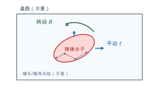

分子晶体压电的刚体分子近似
分子晶体的内应变往往由分子平动与转动主导；刚体分子近似把自由度收到集体坐标上，并说明按频率事后截断为什么会砍错项。
直观阅读需要
- 分子晶体与分子间作用 里分子间作用弱于共价键
- 压电张量 的内应变项
只是提示，不需要先读完才能往下看。
直觉直观解释
有机分子晶体里，把一个分子拆开要断共价键；让分子在晶胞里平移或转动，阻力来自氢键和色散，通常软得多。压电的离子项正是“应变引起原子弛豫、弛豫引起极化”（见 压电张量）。于是一个自然想法是：把每个分子当成刚体，只保留质心平动和整体转动，在这个低维集体坐标上组装内应变，而把键长、键角冻住。
这就是刚体分子近似在晶格动力学里的用法 [@chandrasekharan-1977-rigid-molecule; @gray-day-2004-rigid-dynamics]：先选定集体坐标，再在这些坐标上算力常数与耦合，而不是先算完全原子 K 再按频率砍掉高频模。

| 符号 | 是什么 | 图里对应 |
|---|---|---|
| 红色椭圆 | 当作刚体的分子 | 晶胞中央色块 |
| t | 质心平动自由度 | 蓝色箭头 |
| \theta | 整体转动自由度 | 绿色弧箭头 |
| 灰点折线 | 被冻结的分子内几何（示意） | 分子上的小原子链 |
定义与公式数学与推导
在该子空间里，力常数、内应变耦合与有效模式荷都投影到 q 上。离子压电项的结构仍是“有效荷 \times（力常数逆）\times（应变–坐标耦合）”[Wu, Vanderbilt & Hamann 2005]，只是矩阵维数换成刚体坐标的维数。
和“按频率截断全原子模”的区别
另一条常见捷径是：先在固定分数坐标的均匀应变参照下得到全原子力常数，再丢掉高频光学模，只对低频模求和。问题在于：固定分数坐标会强行拉开共价键，高频模对弹性的修正可以与键刚度同量级，并与软的分子间贡献相消之后才剩下观测到的软曲率。按频率砍高频，砍掉的是这场相消，而不是“可忽略的小项”。
刚体路线避免这条捷径：集体坐标在组装响应之前就定好，高频分子内变形根本不进入 q 空间；若要声明误差，应在完整有限差分可算的小体系上对照，而不是事后用频率阈值证明自己。
在本研究线里的样子对应与边界
- 诊断：若全原子计算里离子压电由少数低频、带极性的分子转动/平动模主导，刚体图像成立；若必须靠分子内变形才能复现 e，刚体近似不够。
- 与色散、结构优化：刚体坐标上的曲率主要来自分子间势能；色散校正和氢键描述会直接进入这些模（见 色散校正、分子晶体与分子间作用）。
- 验收：在可负担的小分子晶体上，比较刚体组装的 d 与完整离子弛豫的有限差分 / DFPT；证书应允许“不通过”，不能只用孤立分子频率当下界。
常见坑对应与边界
- 用气相振动频率估计晶体里“剩下”的刚度：氢键和静电环境会抬高有效刚度，证书可能假通过。
- 先全空间再截断：与事先约束集体坐标不是同一件事；前者在固定分数坐标参照下容易砍错相消项。
- 把刚体近似当成无条件加速：自由度变少，但若每个应变点仍要做昂贵的电子结构，省下的主要是内坐标维数，不是自动省掉全部成本。
检验自己对应与边界
参考资料
论文Chandrasekharan & Walmsley 1977
尚未实际查阅，目前只是拟查阅书目
论文Gray, Day, Leslie & Price 2004
尚未实际查阅，目前只是拟查阅书目
论文Wu, Vanderbilt & Hamann 2005
尚未实际查阅，目前只是拟查阅书目
分类响应与张量性质 · 方法 · 研究线：压电与响应计算、结构预测与能量景观 · 状态：草稿